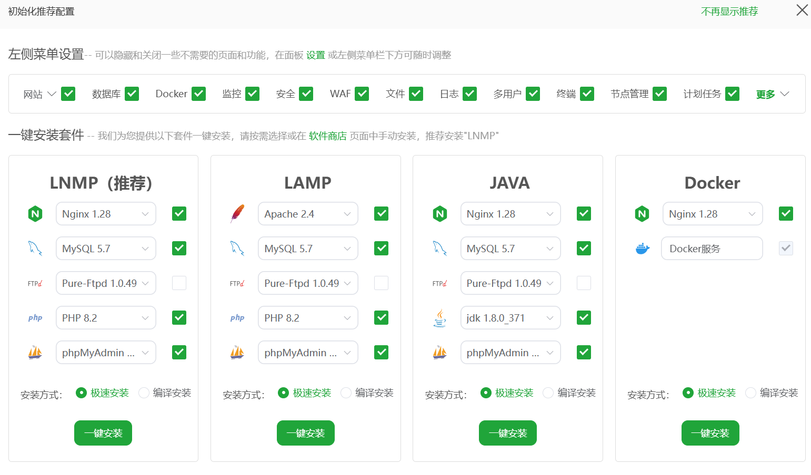

关于云服务器
前言
使用的是阿里云2核2G，99块钱一年的云服务，用于自我学习。
计算机网络
虽然学过，但那是学习安排的全英教学，课程比较水自己又没详细探究，早都全忘了，需要复习一下：在计算机网络中，IP地址用于定位互联网中的某个设备，端口则用于定位该设备上某个具体应用程序。
客户端测试是否连通：1
2Test-NetConnection -ComputerName 8.148.152.102 -Port 1883 # Windows
telnet 8.148.152.102 8083 # Linux
服务端测试端口是否被监听（是否有服务）：1
netstat -tulpn | grep 1883
当然，安全机制不会允许外界随意访问计算机的端口，这又引出了防火墙的概念，在Linux中，以Ubuntu使用的ufw(Uncomplicated Firewall,简易防火墙)为例：1
2
3sudo ufw status # 查看防火墙状态
sudo ufw allow 1883/tcp # 添加新的规则
sudo ufw reload # 重新加载规则
而后云服务器的供应商也有自己的安全组策略，比如阿里云的ECS。当client向server端一个端口发送数据，入方向需要同步更改。
基础应用
宝塔面板
在宝塔官方操作手册中查看，在选择的时候其实可以选择预设应用，其中就有宝塔，选择后用下列指令查看默认信息，包括端口和密码等1
bt default
按照给出的端口，在阿里云控制台安全组中放行端口后即可正常访问，而后可以安装应用，本次我使用的是LNMP。

搭建MQTT服务器
这里使用的是EMQX，主要作用是作为MQTT Broker（消息代理），其是基于Erlang/OTP平台开发的开源、高并发、分布式的 MQTT 消息服务器。安装命令如下所示：1
2
3
4
5
6
7
8
9
10
11# 添加EMQX仓库
curl -s https://assets.emqx.com/scripts/install-emqx-deb.sh | sudo bash
# 安装最新版EMQX
sudo apt-get install emqx
# 启动EMQX服务
sudo systemctl start emqx
# 检查运行状态（显示"active (running)"即为正常）
sudo systemctl status emqx
git私人仓库
在服务端，安装git后创建一下用户用于权限管理，并初始化相关目录：1
2
3
4
5
6
7
8
9sudo apt update
sudo apt install git
sudo adduser git
sudo su git
mkdir -p ~/repos/test.git
cd ~/repos/test.git
git init --bare
而在客户端，要生成并获取公钥1
2ssh-keygen -t rsa -b 4096 -C "name"
cat ~/.ssh/id_rsa.pub
在服务器端处将公钥复制进入，客户机就有权限访问服务器了：1
2
3mkdir -p ~/.ssh
touch ~/.ssh/authorized_keys
vim ~/.ssh/authorized_keys
在客户机中初始化仓库并提交即可1
2
3
4
5
6git init
git add .
git commit -m "Initial commit"
git remote add origin git@<ip>:/home/git/repos/test.git
git push -u origin master